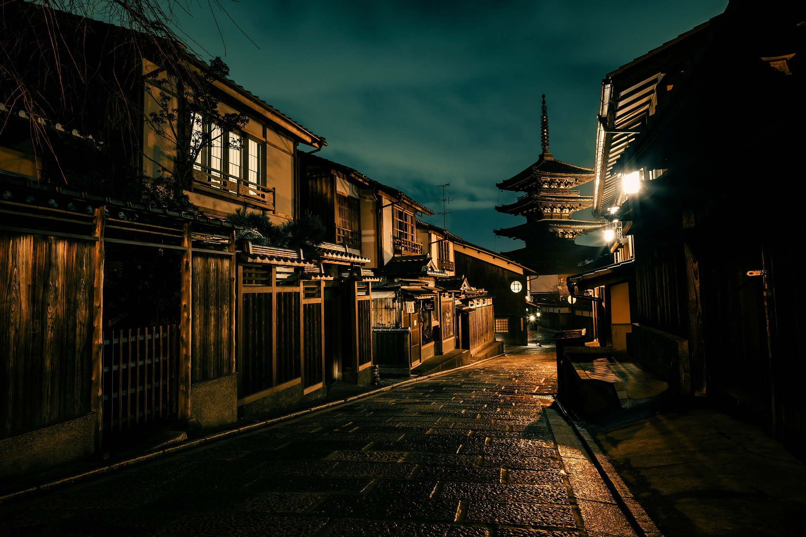
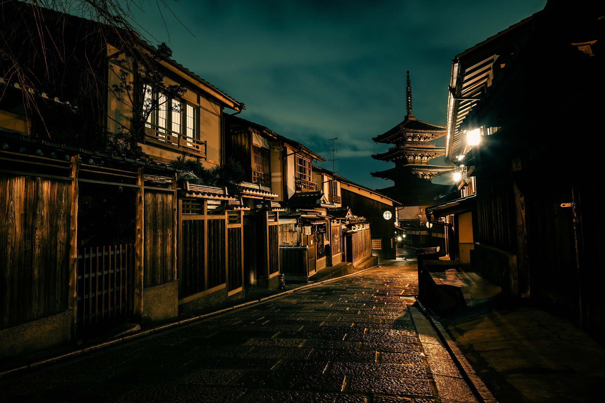

About Japan

Jepang dalam Kanji: 日本
Romaji: Nippon
nama resmi: 日本国
Tentang Nipponkoku adalah sebuah negara kepulauan di Asia Timur. Letaknya di ujung barat Samudra
Pasifik, di sebelah timur Laut Jepang, dan bertetangga dengan Republik Rakyat Tiongkok, Korea
Selatan, dan Rusia. Pulau-pulau paling utara berada di Laut Okhotsk, dan wilayah paling selatan
berupa kelompok pulau-pulau kecil di Laut Tiongkok Timur, tepatnya di sebelah selatan Okinawa
yang bertetangga dengan Taiwan (Republik Tiongkok).
Jepang terdiri dari 6.852 pulau[13] dan menjadikannya sebagai negara kepulauan. Pulau-pulau
utama dari utara ke selatan adalah Hokkaido, Honshu (pulau terbesar), Shikoku, dan Kyushu.


 
